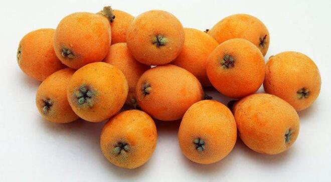

花样吃枇杷：小评枇杷的功效与作用
枇杷果的纤维素和果胶更是减肥圣品，可以加快肠胃蠕动，减少消化产物在肠道中的停留时间；能增大粪便体积，吸附沉淀于肠道中的垃圾废物以及多余油脂。并且枇杷可食用部分的高聚果糖消化起来比单糖更复杂，不会激起血糖的迅速变化，对于胰岛素的刺激小了很多，是瘦身期间吃了也不怕胖的绝佳选择！

一、枇杷膏的前世今生
枇杷可入药的记录在古典医学典籍中十分常见：
从《蜀本草》和《开宝本草》起，就对枇杷的性味归经有了一定的记载：味甘，寒，无毒。入脾、肺，兼入肝。之后的名医名书不断地对枇杷的好处进行补充并研发出“枇杷散”、“枇杷饮”、“枇杷丸”等主枇杷的药剂方子。
在《验方新编》中便首次出现了以“枇杷叶56片（新鲜者更佳，洗净毛），大梨2个（深脐者佳，去皮心，切片），白蜜半钟（先熬，滴水成珠，大便干燥者多加；大便溏泻者不用，以白糖代之），大枣半斤（或黑枣、徽枣皆可），建莲肉4两（不去皮）。”制成的枇杷膏来补虚提神，保身强神旺。
医学圣经《本草纲目》中，李时珍也记载了枇杷具有：解肺热咳嗽、反胃呕哕、鼻血不止、酒赤鼻和痔疮肿痛的功效，它们各自对应着各自的药方，此时的枇杷已经不单独作为唯一的药存在，而是同川贝、百草、款冬、沙参等各种药材配伍，这也算是把枇杷从一种水果彻底拉到了药物的阵营中。
一直到大家耳熟能详的香港枇杷之光京都念慈菴：我当然搞不到工厂配方了，想自己回家做的人还是放弃吧。不过它的配料说明书里还是能查到的，成为主要为川贝母、枇杷叶、桔梗、陈皮、水半夏、北沙参、五味子、款冬花、杏仁水、薄荷脑。辅料为蔗糖、蜂蜜。可以说是所有润肺化痰、止咳平喘、护喉利咽、生津补气、调心降火的清热解毒草药大会面了。
除了这位经典的蜜炼川贝枇杷膏，还有金桔秋梨枇杷膏和冰糖酸枣枇杷膏，不知道以后会不会紧随某音开发出脏脏乳酪枇杷膏和京都抹茶枇杷膏等网红口味呢？拭目以待吧！
二、枇杷的营养成分小解析
枇杷可入药的部分非常多，说得通俗点儿那和猪一样叫全身都是宝！
从“头”说起，枇杷的生命之初还是一个种核的时候，就有着微量的苦杏仁甙，虽然在人体内可水解出具有轻微毒性的氰化氢，但它本人可是名正言顺的维生素B族子弟（维生素B17）。
枇杷入药大头枇杷叶经现代药理研究发现，其中除了含有苦杏仁甙，还含有皂甙，皂甙作为一种生物活性物质，很容易分解成为机体功能的葡萄糖、半乳糖、鼠李糖、阿拉伯糖、木糖及葡萄糖醛酸和半乳糖醛酸。
叶中微量的乌索酸只有枇杷叶和女贞叶两种植物可提取，十分罕见珍贵；其中还检测到了齐墩果酸，一种有明显的降低谷丙转氨酶活性的安全成分，另外还有丰富的鞣质、维生素B1、维生素C等化学成分。
这么比起来，枇杷果作为精华，含有大量的纤维素、果胶、胡萝卜素、苹果酸、柠檬酸、钾、磷、铁、钙及维生素A、B、C。也不足为奇，毕竟枇杷“果之冠”叫得响亮，也并非浪得虚名了。
三、枇杷的功效和作用浅评
了解了枇杷的营养成分，那么对应着这些营养我们大体也可以了解枇杷究竟有哪些值得称道的功效与作用了。
首先就是苦杏仁苷的润肺止咳功效，它水解出的氰化氢有麻痹神经元的能力，能够镇咳祛痰，难怪美国人的久咳不愈可以靠枇杷膏治好；维生素B族能达到显著清火明目的目的，多吃点对缓解眼睛疲劳十分奏效。
维生素C和各种有机酸成分是机体抗氧化抗病毒的一把手，适量地补充能够有效地抑制流感病毒，预防四时感冒，还可以提高机体的健康活力，缓解四肢疲劳乏力；其中丰富的矿物微量元素钾、磷、铁、钙还能补充机体营养成分，增强身体的新陈代谢，催化各项生理化学反应。
枇杷果的纤维素和果胶更是减肥圣品，不溶于水的纤维素可以加快肠胃蠕动，减少消化产物在肠道中的停留时间；而果胶遇水溶解成胶体，能增大粪便体积，吸附沉淀于肠道中的垃圾废物以及多余油脂。并且枇杷可食用部分的高聚果糖消化起来比单糖更复杂，不会激起血糖的迅速变化，对于胰岛素的刺激小了很多，是瘦身期间吃了也不怕胖的绝佳选择！
四、关于枇杷，想不到还可以这样吃
枇杷果酱——选择新鲜成熟的枇杷果，去皮去核，搅打成泥，再加入适量的柠檬皮碎和金桔汁提味，然后拌上蜂蜜，贮存于消毒杀菌后的玻璃罐里。无论是清晨用来泡杯水缓解渴了一宿的咽喉或者烤了吐司片涂抹均匀吃下肚，都是清甜爽口的无尽回味。
枇杷果酒——依旧是选取优质的枇杷果肉，在小锅中把热水煮沸后溶解白糖，加入果肉浸泡两三个小时，等枇杷尝起来有了罐头的口感后捞出来放在一旁备用（这时候就是枇杷罐头了，追求简约生活的读者看到这里就可以停止去吃掉，追求仪式感的观众请继续）。
将柠檬皮洗净切成细丝，放入低度糯米酒中浸泡半小时以上，再将糖水枇杷和酒糟柠檬一起倒入消毒后的酿酒器里，撒上一撮丁香和玫瑰花瓣，贮存三十天左右，就可以过滤掉酒渣，享用枇杷果酒了，这样的枇杷制品，不仅有酒精抑制了些毒性，还稍稍改善了枇杷原本寒凉的性味，更能达到养生的功效。
 上一篇
上一篇